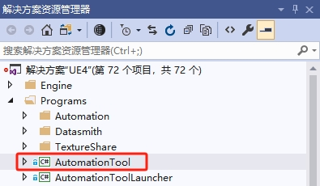

如何发布¶
本文档适用于想要发布新版本的开发人员。
!!! 笔记 已发布的服务：Carla C++ 文档、神经网络原理 、车辆信息可视化内网访问 、场景像素流 、DeepSeek大模型内网访问 （或 公网访问 ） 、Jenkins 8080 。
-
确保内容是最新的。
请参阅 升级内容。 -
必要时增加 Carla 版本。
增加以下文件中的版本： DefaultGame.ini, Carla.uplugin, setup.py, ContentVersions.txt 。Grep 查看当前版本，以确保您不会错过任何参考。 -
清除 CHANGELOG.md。
确保变更日志是最新的，必要时重写并重新组织；考虑哪些项目对用户来说更重要。 -
提交更改并添加新标签。
提交所有更改后，添加一个新标签git tag -a X.X.X（用最新版本替换X.X.X）。 添加此版本的变更日志作为标签消息。 -
标签内容仓库。
在确切的提交处将类似的标签添加到内容存储库，如 ContentVersions.txt 中。 -
推送更改。
将所有更改推送到两个存储库，以推送您可能需要使用git push --tags的标签。如有必要，创建拉取请求。 -
编辑 GitHub 版本。
转到 GitHub 发布 并在新创建的标签之上创建一个新版本。等到 Jenkins 完成发布最新版本的构建，并将下载链接添加到新创建的版本。
发布像素流¶
发布可执行游戏¶
- 安装
pyinstaller：或安装图形窗口打包工具：pip install pyinstaller然后运行pip install auto-py-to-exeauto-py-to-exe。
发布带Carla插件的虚幻编辑器¶
1.参考 Windows 下的构建 进行带Carla插件的虚幻编辑器的构建；
2.发布安装版本 参考链接 进行虚幻引擎的发布。
3.使用 Visual Studio 打开 UE4.shn 。
4.在右侧边栏，您应该会看到一个解决方案资源管理器面板。展开Programs文件夹并找到AutomationTool项目（Engine\Source\Programs\AutomationTool）：

5.右键单击它并选择生成(Build)，应该很快。
6.运行安装软件的构建脚本：（如果没有）安装 Windows 10 SDK ;
将文件 GenerateInstalledBuild.bat 拷贝到虚幻引擎源代码的根目录，然后点击运行。
如果一切顺利，您应该会看到LocalBuilds与该文件夹处于同一级别的Engine文件夹，并且控制台中没有错误。(还包括一个 InstalledDDC 文件夹：DerivedDataCache)。
或者到虚幻引擎源代码主目录中运行下面命令：
cd Engine\Binaries\DotNET
AutomationTool.exe BuildGraph -target="Make Installed Build Win64" -script=Engine/Build/InstalledEngineBuild.xml -set:HostPlatformOnly=true
-
运行
`GenerateInstalledBuild.bat时从报错日志中发现的错误：解决：下载 链接 的ERROR: Visual Studio 2017 must be installed in order to build this target.software/Build Binary中的vs_Community_2017.exe或3d5_VisualStudio20171509.rar进行安装。 -
运行
`GenerateInstalledBuild.bat时候报错：解决：参考 链接 的Unable to find installation of PDBCOPY.EXEsoftware/Build Binary目录 或者 链接 从 百度网盘 下载X64 Debuggers And Tools-x64_en-us.msi安装。 -
无法启动
解决：参考 链接 安装 DirectX Redist (June 2010)。无法启动此程序，因为计算机中丢失XINPUT1_3.dll。尝试重新安装该程
设计¶
参考BeamNG
发布到商城¶
Baidunet Disk Download Link: https://pan.baidu.com/s/1hFngmeAvyUulsiI-JlNHuA?pwd=hutb
A simulator and scene editor for autonomous driving.
问题¶
点击打包后的文件出现错误：
TypeError: expected str, bytes or os.PathLike object, not _io.BytesIO
pygame.font.Font(pygame.font.get_default_font(), 20)
freesansbold.ttf，最后将字体文件拷贝到和exe文件相同的路径，然后执行即可。